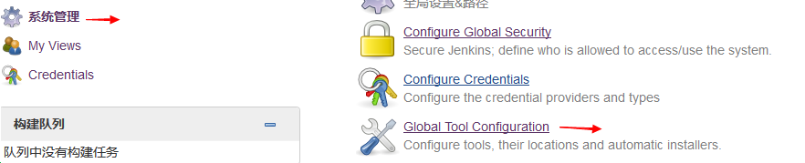

安装
条件
1.java:
最低java7，推荐java8
2.内存：
最少需要256MB-1GB
安装jdk
下载Oracle jdk通用二进制版本(全凭个人喜好）
wget http://download.oracle.com/otn-pub/java/jdk/8u111-b14/jdk-8u111-linux-x64.tar.gz
解压到指定目录，例如:
tar xf jdk-8u111-linux-x64.tar.gz -C /usr/local
建立软链接:
ln -sv /usr/local/jdk1.8.0_111 /usr/local/java
修改PATH环境变量:
cat > /etc/profile.d/java.sh <<"EOF"
> export JAVA_HOME=/usr/local/java
> export PATH=$JAVA_HOME/bin:$PATH
> export CLASSPATH=.:$JAVA_HOME/lib/dt.jar:$JAVA_HOME/lib/tools.jar
> EOF
重读配置文件:
. /etc/profile.d/java.sh
测试:
java -version
下载jenkins
wget http://mirrors.jenkins.io/war-stable/latest/jenkins.war
启动
java -jar启动
1.java -jar jenkins.war
2.ip:8080访问
Tomcat启动
下载tomcat
wget http://mirrors.tuna.tsinghua.edu.cn/apache/tomcat/tomcat-8/v8.5.9/bin/apache-tomcat-8.5.9.tar.gz
解压
1.tar xf apache-tomcat-8.5.9.tar.gz -C /usr/local/
建立软链接
2.ln -sv /usr/local/apache-tomcat-8.5.9 /usr/local/tomcat
将jenkins.war移动到tomcat项目部署目录
3.mv jenkins.war /usr/local/tomcat/webapps
启动tomcat
4./usr/local/tomcat/bin/startup.sh
验证
5.ip:8080/jenkins访问
配置
Global Tool Configuration

jdk设置
先在jenkins主机上面安装JDK
前面已经安装了
jenkins设置jdk
git设置
先在jenkins主机上面安装git
yum -y install git
jenkins设置git
maven设置
maven安装
下载maven
wget http://mirrors.tuna.tsinghua.edu.cn/apache/maven/maven-3/3.3.9/binaries/apache-maven-3.3.9-bin.tar.gz
解压到指定目录
tar xf apache-maven-3.3.9-bin.tar.gz -C /usr/local/
建立软链接
ln -sv /usr/local/apache-maven-3.3.9 /usr/local/maven
新建文件maven.sh
cat > /etc/profile.d/maven.sh << "EOF"
> MAVEN_HOME=/usr/local/maven
> PATH=$MAVEN_HOME/bin:$PATH
重读maven.sh
. /etc/profile.d/maven.sh
测试
mvn -v
jenkins的maven配置
系统设置
1.点击系统管理
2.点击系统设置
jenkins家目录
默认情况下家目录在~/.jenkins，可以按照下面的方式来修改
设置环境变量
新建文件jenkins.sh
cat > /etc/profile.d/jenkins.sh <<"EOF"
> export JENKINS_HOME=/data/jenkins
> EOF
重读配置文件
. /etc/profile.d/jenkins.sh
Tomcat的catalina.sh文件
export JENKINS_HOME=/data/jenkins
修改jenkins.war的web.xml
不推荐
备份恢复
备份
备份整个JENKINS_HOME目录，可以在不停止jenkins服务的时候进行
恢复
恢复就是将整个备份的JENINS_HOME目录移动到JENKINS_HOME，必须在停止jenkins服务的时候进行
job操作
移动
将一个job从一个jenkins移动到另一个jenkins只需要将对应的job目录移过去就行
复制
将一个job复制为另一个job只需要复制为另一个名字的job
重命名
重命名一个job只需要修改对应的目录名字，但是其他调用此job的都需要修改
URL选项
重启
http:jenkins-server/restart
停止
http:jenkins-server/exit
重载配置
http:jenkins-server/reload